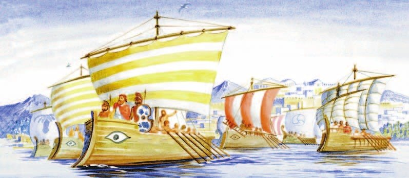
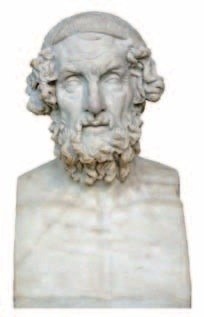
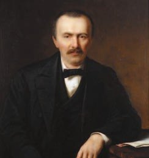
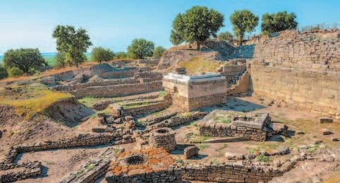
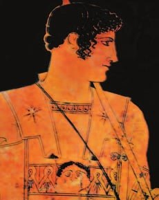
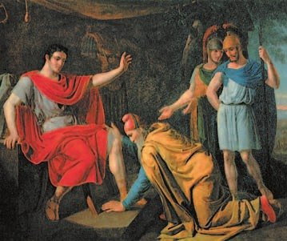
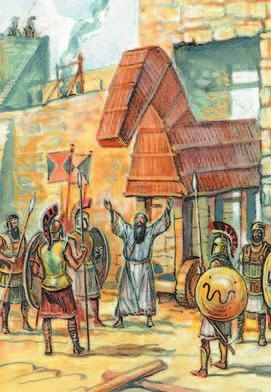
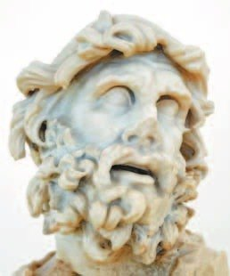
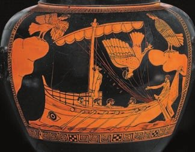
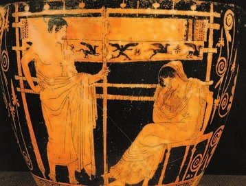

Великий поэт Древней Греции
После гибели Микен (§20) Греция надолго остановилась в развитии. Но греки помнили своё славное прошлое и складывали о нём предания. Их пересказывали от дедов к внукам.
Больше всего любили рассказы о Троянской войне. Великий поэт сложил о ней поэму . Название — от Илиона, второго имени Трои. Гомер жил в VIII веке до н. э. По преданию, он был слепым. А семь городов Греции спорили: каждый хотел считаться его родиной.
Вторая поэма Гомера — . Она о том, как царь Одиссей долго плыл из-под Трои домой, на свой остров Итаку. Теперь «одиссеей» называют любое долгое путешествие.
С чего началась война? С яблока. Богиня раздора Эрида тайком подкинула богиням Гере, Афине и Афродите золотое яблоко с надписью «прекраснейшей». Кому оно? Выбирать должен был троянский царевич . Отсюда выражение «».
Победила Афродита. Она пообещала Парису любовь самой прекрасной женщины на земле — спартанской царицы . Парис похитил Елену. Это и стало поводом к войне.
Муж Елены, спартанский царь Менелай, собрал поход ахейцев. С ним пошли все цари, которые когда-то сватались к Елене. Во главе встал брат Менелая — царь Микен . Сотни кораблей поплыли к Трое, в Малую Азию. Война длилась десять лет.
Воевали даже боги: одни помогали троянцам, другие — ахейцам.
После падения микенских царств Греция остановилась в своём развитии. Но греки помнили о своём славном прошлом и слагали о нём предания, которые передавали из поколения в поколение.
Любимыми сюжетами греков были Троянская война и её герои. Великий греческий поэт Гомер воспел эту войну в поэме «Илиада» (слово образовано от другого названия Трои — Илион). Создатель поэмы, живший в VIII (8) веке до н. э., по преданию, был слепым. Семь городов Греции спорили между собой за право называться родиной Гомера.
Гомера считают и автором поэмы «Одиссея», название которой стало нарицательным для дальнего путешествия. В ней рассказывается о странствиях царя Одиссея на пути от Трои до родного острова Итака.
По легенде, богиня раздора Эрида тайком подкинула другим богиням — Гере, Афине и Афродите — золотое яблоко с надписью «прекраснейшей». Выбрать, кому оно предназначалось, должен был троянский царевич Парис. Богини шли на всевозможные ухищрения, пытаясь заполучить яблоко и титул «прекраснейшая». С этой легендой связано выражение «яблоко раздора».
Победила Афродита, которая пообещала Парису помочь обрести любовь прекраснейшей земной женщины — спартанской царицы Елены. Похищение Елены и послужило поводом к началу Троянской войны.
В ответ на похищение муж Елены, спартанский царь Менелай, организовал поход ахейцев на Трою. Все греческие цари, бывшие когда-то женихами Елены, отправились вместе с Менелаем. Возглавил поход брат Менелая — царь Микен Агамемнон. Сотни кораблей направились в Малую Азию к берегам Трои. Война продолжалась десять лет.
В Троянской войне участвовали даже боги. Одни из них поддерживали троянцев, другие — ахейцев.

Много веков люди читали «Илиаду» и думали: это сказка, никакой Трои не было. Но немецкий предприниматель Генрих , разбогатевший в России, верил: Троя была — и он её найдёт.
Он внимательно прочитал Гомера и вычислил место — холм Гиссарлык на берегу Малой Азии. Сейчас это Турция — страна, где ты была. В 1870 году Шлиман начал копать и нашёл девять городов: один над другим, каждый нижний древнее.
Какой из них Троя? Шлиман решил: тот, где нашёлся «клад Приама» — множество драгоценных украшений. Позже учёные доказали, что Троя Гомера лежала в другом слое. Но славу Шлимана это не затмило.
Потом он копал в Микенах и нашёл гробницы царей — ту самую золотую маску из §20. А в Тиринфе — дворец с фресками. Так Шлиман доказал: царства из поэм Гомера были на самом деле.
В течение многих столетий люди читали «Илиаду». Троянская война воспринималась не более чем вымыслом. Разбогатевший в России немецкий предприниматель и археолог-любитель Генрих Шлиман верил в то, что именно он сможет найти легендарный город. Внимательно изучив поэму Гомера, он определил предполагаемое местонахождение Трои — холм Гиссарлык на побережье Малой Азии. В 1870 году он приступил к раскопкам и обнаружил девять городов, один древнее другого. Вопрос, какой относится к Трое из поэмы Гомера, Шлиман решил после находки «клада Приама» — множество драгоценных украшений. Позже учёные доказали, что гомеровская Троя находилась в другом слое, но этот факт не затмил славы Шлимана.
После Трои археолог вёл раскопки в Микенах и Тиринфе (Пелопоннес). В Микенах он обнаружил погребения микенских царей, в Тиринфе — дворец, украшенный фресками. Открытия Генриха Шлимана доказали, что царства, описанные Гомером, не выдумка, они существовали на самом деле.


- Что послужило поводом для начала Троянской войны?
1. Как связаны падение микенских царств и появление поэм Гомера?
2. Почему Шлиман искал Трою по поэме, хотя все считали её выдумкой? И что он в итоге доказал?
3. Агамемнона ты уже встречала в §20. Кто он в этой истории и при чём тут маска?
Поэма «Илиада»
«Илиада» — не про всю войну, а только про её последний, десятый год.
Начинается всё со ссоры. — самый могучий герой ахейцев — поссорился с Агамемноном из-за добычи. Обиделся, ушёл в свой шатёр и перестал сражаться.
Троянцы узнали об этом. Их вождь , сын царя , напал на ахейцев и прижал их к самому морю, к кораблям.
Друг Ахилла, , не мог смотреть, как гибнут свои. Он попросил у Ахилла доспехи, надел их и бросился в бой. Ахейцы отогнали троянцев до самых стен Трои. Но там Гектор с помощью бога Аполлона убил Патрокла копьём и забрал доспехи Ахилла.
Ахилл поклялся отомстить. Он помирился с Агамемноном и вернулся в бой. Бог-кузнец Гефест выковал ему новые доспехи. Ахилл сразил многих троянцев — а потом встретился с Гектором и убил его. Тело Гектора он привязал к колеснице и увёз в свой лагерь.
К Ахиллу пришёл старый царь Приам с богатыми дарами. Он умолял отдать тело сына. И Ахилл отдал. Даже объявил перемирие на десять дней — чтобы троянцы достойно похоронили Гектора. Этими похоронами «Илиада» и заканчивается.
Последний, десятый год осады Трои Гомер описал в поэме «Илиада». Первая песнь поэмы начинается со ссоры Ахилла, самого могучего героя среди ахейцев, и царя Агамемнона из-за раздела добычи. Обиженный Ахилл удалился в свой шатёр и перестал участвовать в сражениях. Троянцам стало известно об этом. Их предводитель, сын царя Приама могучий Гектор, со своими воинами напал на ахейцев.
Троянцы оттеснили противника до самого берега, где стояли греческие корабли. Друг Ахилла Патрокл не мог спокойно смотреть, как гибнут ахейцы. Он обратился к Ахиллу с просьбой дать ему на время свои доспехи. В сверкающих доспехах Ахилла Патрокл бросился на помощь ахейцам. Греки отбили троянцев от своего лагеря и прогнали их до стен Трои. У самых стен города Гектор при помощи бога Аполлона поразил Патрокла копьём, снял с него доспехи Ахилла и отнёс в Трою.
Ахилл узнал о гибели своего друга и поклялся отомстить троянцам. Помирившись с Агамемноном, он вернулся в строй. Бог-кузнец Гефест выковал для него новые доспехи. Многих троянских героев сразил Ахилл, пока не встретился со своим главным врагом. Во время поединка копьё Ахилла поразило сына Приама. Ахилл привязал его тело к своей колеснице и вернулся в лагерь ахейцев.
Царь Приам отправился в лагерь ахейцев с богатыми дарами и умолял Ахилла вернуть тело Гектора. Ахилл отдал Приаму тело сына. Он даже заключил с троянцами перемирие на десять дней. Столько времени требовалось, чтобы воздать последние почести Гектору и достойно похоронить его. Поэма заканчивается торжественным погребением Гектора.


- Назови главных персонажей поэмы «Илиада».
4. Почему ссора Ахилла с Агамемноном чуть не погубила ахейцев?
5. Как гибель Патрокла изменила ход войны?
6. Доспехи Ахилла встречаются в параграфе три раза. Где?
Поэма «Одиссея»
Чем кончилась война, рассказывают легенды. Хитроумный придумал план. Ахейцы построили огромного деревянного коня и спрятали в нём воинов. А войско погрузилось на корабли — будто уплывает домой.
Один грек остался и сказал троянцам: конь — подарок богине Афине, он принесёт удачу. Троянцы поверили и сами втащили коня в город. Ночью воины вылезли из коня, открыли ворота и впустили тайком вернувшихся ахейцев. Троя пала. Греки поплыли домой и увезли с собой Елену.
Поспешил домой и Одиссей. Но дорога заняла десять лет! Об этом — поэма «Одиссея».
Сначала корабль прибило к острову великанов-. Греки зашли в пещеру, а тут вернулся хозяин — циклоп , сын Посейдона, со стадом баранов. Он съел шестерых спутников Одиссея — так он нарушил закон гостеприимства.
Одиссей напоил великана вином, а когда тот уснул, выколол ему единственный глаз. Слепой Полифем отодвинул камень от входа и выпустил баранов, надеясь поймать людей в пустой пещере. Но греки выбрались, спрятавшись под животами баранов.
Полифем пожаловался отцу. И Посейдон с тех пор насылал на Одиссея несчастья — на всём пути домой.
Проплывал Одиссей и мимо — полуженщин-полуптиц с волшебным пением. Спутникам он велел залить уши воском, а себя привязать к мачте. Так он стал единственным, кто услышал сирен и остался жив.
Потеряв ещё спутников, он еле прошёл между скалами — они сдвигаются, когда между ними корабль. Нимфа держала его на своём острове семь лет, пока не вмешались боги. Дальше — один, на плоту. Посейдон поднял бурю, и Одиссея выбросило на остров гостеприимных . Они дали ему корабль, и он доплыл до родной Итаки.
Двадцать лет его не было дома. Все думали, что он погиб. Все, кроме жены и сына Телемаха. К Пенелопе сватались женихи. Она устроила им испытание: выстрелить из лука Одиссея.
Ты стреляла из лука и знаешь: даже детский надо суметь натянуть. А с луком могучего Одиссея не справился ни один жених. Тут попросил попробовать нищий — это был переодетый Одиссей — и легко справился. Одиссей расправился с женихами и снова стал править Итакой.
О том, как закончилась Троянская война, рассказывают греческие легенды. По совету хитроумного Одиссея ахейцы построили огромного деревянного коня, внутри которого спрятались воины. Основное войско погрузилось на корабли, изображая отплытие на родину.
Один грек, оставшийся у Трои для выполнения замысла Одиссея, рассказал жителям, что конь — это дар отплывших ахейцев богине Афине. Он принесёт удачу тому, кто им владеет. Троянцы поверили и втащили коня в город. Ночью, когда все уснули, из брюха коня выбрался отряд ахейцев во главе с Одиссеем. Они открыли ворота Трои и впустили тайком вернувшихся греков. Все мужчины — защитники города погибли, женщин и детей обратили в рабство. Разрушив Трою, греки отплыли домой, увозя с собой и прекрасную Елену. Поспешил домой и Одиссей.
В поэме «Одиссея» Гомер повествует о скитаниях своего героя, которые продолжались десять лет. На одном из островов, куда прибило корабль Одиссея, обитали великаны-циклопы. Греки вошли в одну из пещер, и в это время вернулся её хозяин — циклоп Полифем, сын бога Посейдона, со стадом своих баранов. Полифем съел шестерых спутников Одиссея, грубо нарушив закон гостеприимства. Одиссей нашёл способ, как выбраться из пещеры: он напоил великана вином, а когда тот уснул, выколол ему единственный глаз. Ослепший Полифем схватил камень, закрывавший вход, и выпустил баранов, надеясь в пустой пещере отыскать людей. Одиссей перехитрил циклопа и на этот раз. Он и его спутники покинули пещеру, спрятавшись под животами баранов. С просьбой наказать обидчика Полифем обратился к отцу. Посейдон услышал мольбы сына и с тех пор посылал несчастья спешившему домой Одиссею.
Потеряв нескольких спутников, герой с трудом пробрался между двумя скалами — Сциллой и Харибдой, сдвигающимися во время нахождения между ними кораблей. Нимфа Калипсо, на остров которой попал Одиссей после очередного кораблекрушения, удерживала его семь лет, пока не вмешались боги. Один, на плоту, герой продолжает путь. Но Посейдон поднимает бурю, и Одиссея, чудом оставшегося в живых, выбрасывает на остров утопического народа феаков. Гостеприимные феаки снарядили корабль, на котором Одиссей добрался до родной Итаки. Переодевшись нищим, он проникает во дворец.
Прошло 20 лет с тех пор, как Одиссей покинул свой дом. Все считали его погибшим, кроме жены Пенелопы и сына Телемаха. Пенелопу одолевают женихи, каждый из которых предлагает себя в качестве нового супруга. Она устраивает им испытание, предлагая выстрелить из лука Одиссея. Женихи не могут выполнить это задание, им не под силу справиться с луком могучего Одиссея. Нищий пришелец тоже просит разрешения попытать счастья и легко справляется со своим луком. Одиссей расправился с женихами и вновь стал править на Итаке.




- Какие сведения об Одиссее содержат греческие легенды?
- Какие события отражены в поэме Гомера «Одиссея»?
7. Почему дорога Одиссея домой растянулась на десять лет? Кто в этом виноват?
8. Сколько лет Одиссей не был дома и из чего складываются эти годы?
9. Что общего у хитрости с конём и возвращения во дворец на Итаке?
Подведём итоги
- Чему посвящены поэмы Гомера?
- По твоему мнению, какое приключение Одиссея на пути домой было самым опасным? Объясни свой ответ.
- Почему Одиссея называли хитроумным?
- Какой персонаж поэмы «Илиада» вызывает у тебя наибольшее сочувствие и почему?
- Как ты думаешь, почему в «Илиаде» одним из главных героев является Ахилл? Что выделяло Ахилла среди других греческих воинов?
Прочитай список понятий. Какое из них лишнее? Объясни почему. Парис, Ахилл, Гектор, Шлиман.
Сформулируй ответ на главный вопрос параграфа — почему поэмы Гомера популярны до сих пор? Приведи два-три довода.
Проверь себя
Нажимай по очереди — от яблока до возвращения Одиссея домой.
1. Откуда название «Илиада»?
2. Что было написано на яблоке Эриды?
3. Кто возглавил поход ахейцев на Трою?
4. Сколько лет длилась Троянская война?
5. Как ахейцы взяли Трою?
6. Какое испытание Пенелопа устроила женихам?
Расскажи вслух
Гомер и его поэмы
- Гомер — великий поэт, жил в VIII веке до н. э., по преданию был слепым; семь городов спорили за право быть его родиной.
- «Илиада» — о Троянской войне (Илион — другое имя Трои). «Одиссея» — о странствиях Одиссея домой.
- Поэмы сложены из преданий, которые греки передавали из поколения в поколение после падения Микен.
Как началась Троянская война
- Эрида подкинула яблоко «прекраснейшей»; Гера, Афина и Афродита спорят, выбирает Парис.
- Афродита обещает Парису любовь Елены; Парис похищает Елену у Менелая.
- Менелай и цари-женихи плывут к Трое, во главе — Агамемнон; война длится десять лет.
О чём «Илиада»
- Десятый год войны: Ахилл ссорится с Агамемноном и перестаёт сражаться.
- Патрокл в доспехах Ахилла идёт в бой и гибнет от копья Гектора.
- Ахилл мстит и убивает Гектора; Приам выпрашивает тело сына; поэма кончается похоронами Гектора.
Приключения Одиссея
- Троянский конь — хитрость Одиссея, Троя пала.
- Десять лет пути: циклоп Полифем, сирены, Сцилла и Харибда, семь лет у Калипсо, буря Посейдона, феаки.
- Через двадцать лет — Итака: испытание луком, Одиссей побеждает женихов.
Главный вопрос: почему поэмы Гомера популярны до сих пор
- Это захватывающие истории: война, подвиги, чудовища, хитрости и долгий путь домой.
- Из них пришли выражения, которыми мы пользуемся: «яблоко раздора», «одиссея», «троянский конь» — и даже «троян».
- Это важнейший источник знаний о Древней Греции — Шлиман по «Илиаде» нашёл Трою.